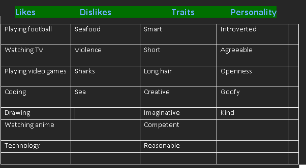
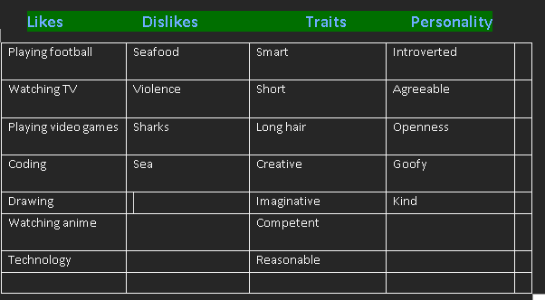

I personally don't feel like any of the results match my actual persnality.
the test reveal that I score 63% in Offbeat personality which I think is way of
and should be much lower further more I think the test is biased to some degree.
I scoring 56% on easy going personality which I think is accurate to some degree
but my overall thoughts is that this test is not a valid representation of my feelings.

 
